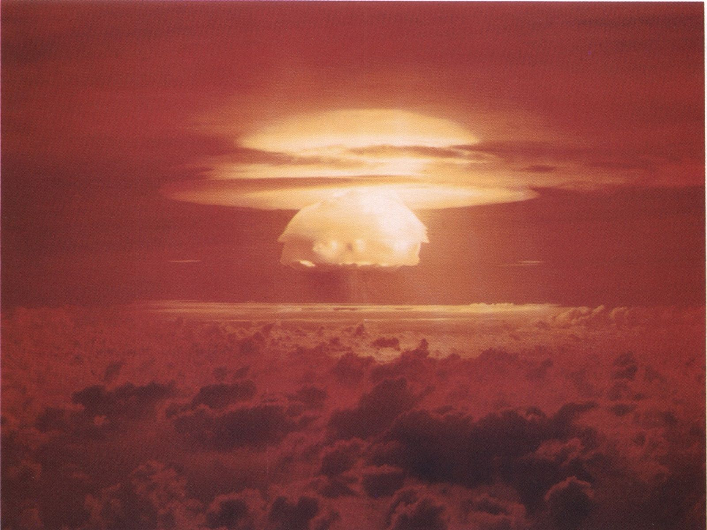
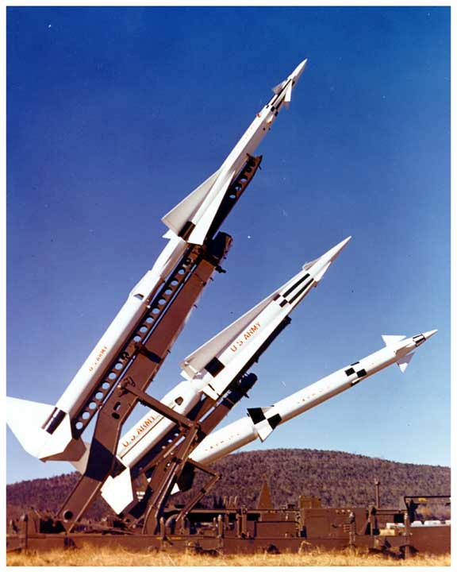
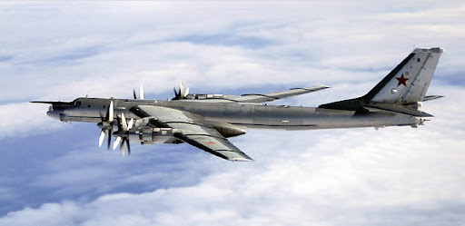

Modern Era (1946 to Present)
After World War II, military history was shaped by nuclear deterrence, decolonization, proxy wars, precision-guided weapons, and the rapid expansion of air, naval, and information warfare. The Cold War drove large-scale military planning even when direct superpower conflict was avoided, while regional wars in Asia, the Middle East, Africa, Europe, and the Americas revealed new doctrines, technologies, and political constraints. The modern era also includes counterinsurgency, special operations, cyber conflict, and the growing role of intelligence, satellites, drones, and long-range strike systems in shaping the battlefield.

The Battle of Inchon (1950)
Korean War, Amphibious, UN, MacArthur
Inchon was the audacious amphibious landing that reversed the course of the Korean War in 1950 and restored strategic initiative to United Nations forces.
The Battle of Dien Bien Phu (1954)
First Indochina War, France, Viet Minh, Siege
Dien Bien Phu ended French hopes of retaining Indochina when the Viet Minh destroyed a major fortified base through siege, artillery, and logistics in difficult terrain.
The Battle of Ia Drang (1965)
Vietnam War, Air Mobility, United States, North Vietnam
Ia Drang was the first major battle between U.S. and North Vietnamese regular forces, revealing both the power and limits of helicopter-based mobile warfare.
The Battle of Khe Sanh (1968)
Vietnam War, Siege, Marines, Firepower
Khe Sanh became one of the most famous sieges of the Vietnam War, combining artillery duels, air resupply, and political symbolism under intense pressure.
The Tet Offensive (1968)
Vietnam War, Offensive, Urban, Psychological
Though costly to North Vietnam militarily, the Tet Offensive transformed the political perception of the Vietnam War and demonstrated the strategic power of shock and surprise.
The Battle of Hamburger Hill (1969)
Vietnam War, Air Assault, Attrition, A Shau Valley
Hamburger Hill became a symbol of the Vietnam War's grinding attritional logic as U.S. forces fought for a costly objective that was soon abandoned.
The Battle of Khafji (1991)
Gulf War, Saudi Arabia, Iraq, Coalition
Khafji was the first major ground engagement of the Gulf War and showed how air power, reconnaissance, and coalition coordination could overwhelm an Iraqi offensive.
The Battle of 73 Easting (1991)
Gulf War, Armor, United States, Desert
73 Easting was a short, violent armored engagement that displayed the overwhelming advantage of coalition sensors, training, and fire control in open desert warfare.
The Second Battle of Fallujah (2004)
Iraq War, Urban Warfare, Marines, Insurgency
Fallujah was one of the toughest urban battles fought by U.S. forces since Vietnam, combining house-to-house combat with the larger problem of insurgent warfare.
The Battle of Mosul (2016-2017)
Iraq, Islamic State, Urban, Coalition
The battle for Mosul was the largest urban campaign in Iraq since 2003 and demonstrated the complexity of modern coalition warfare against entrenched non-state forces.

Atomic Research and Detonation Sites
Map, Nuclear, Research, Testing
A reference card for atomic research and detonation locations connected to the nuclear age.

Nike Missile Sites
Cold War, Air Defense, United States, Missile
A reference card for U.S. Nike missile sites and the air-defense network built during the Cold War.

Soviet Airfields During the Cold War
Cold War, USSR, Airbase, Aviation
A set of pages showing Soviet airfields, including major bomber and Arctic bases.
Soviet Union OOB 1989
Cold War, USSR, Order of Battle, Reference
A reference index covering Soviet military districts, groups of forces, and formations near the end of the Cold War.

US Army OOB 1989
Cold War, United States, Order of Battle, Reference
Reference pages for active-duty U.S. Army formations around 1989.
Submit corrections to Hank